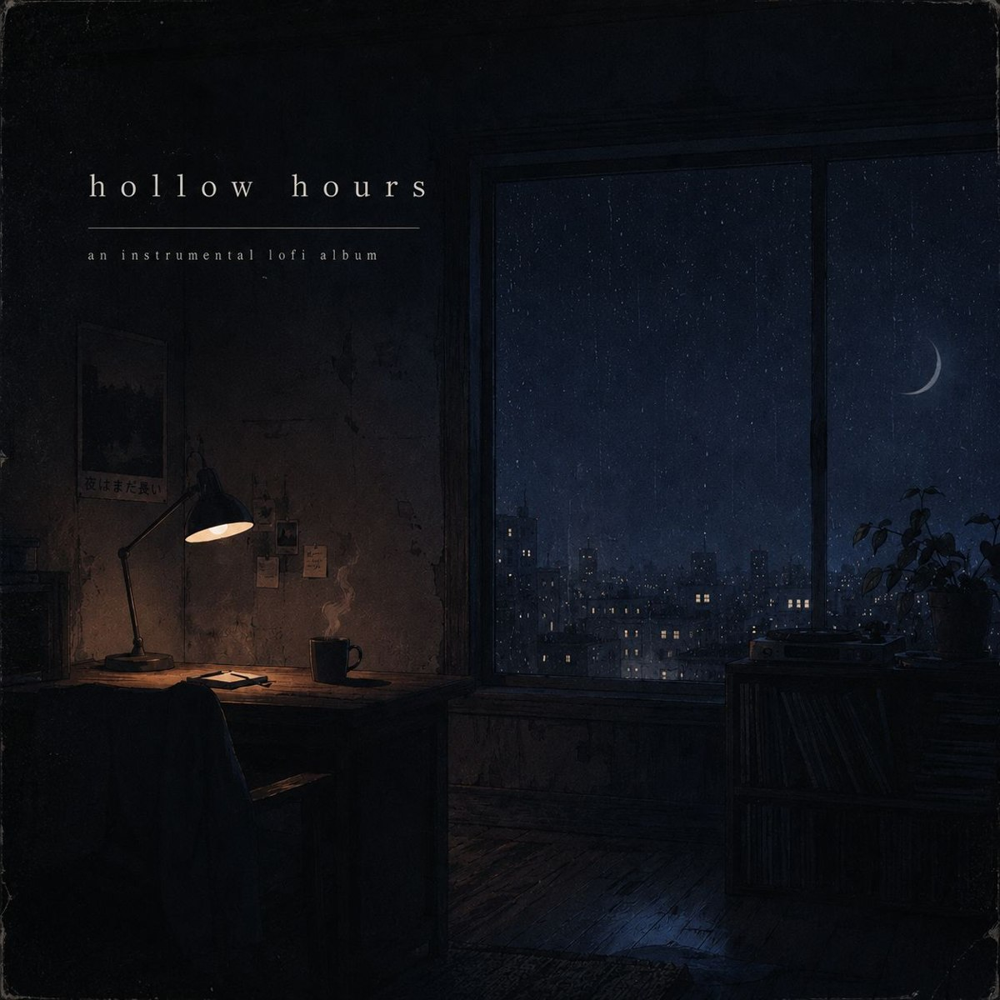

Find your next
favorite moment.
Explore DARENSTEFAN's cinematic music. Listen through official streaming players, save your favorites and discover free personal-listening downloads as they become available.
Playback is provided by Spotify. Full-song availability and eligible stream counting depend on Spotify's player, account and platform rules.
Explore the collection
10 songs
No releases match your search. Try a different title or category.

Hollow Hours
Explore the seven instrumental pieces on SoundCloud. Downloadable masters for this collection have not yet been provided.
Listen to Hollow Hours on SoundCloud ↗Music worth keeping.
Free MP3 downloads are planned for personal listening. The download links will become available after secure audio hosting and testing. A voluntary PayPal support option is also planned, but is not active yet. No payment will be required to download.
MP3 downloads · being prepared PayPal support · inactiveDARENSTEFAN is a fictional AI music artist. Downloads do not grant commercial reuse rights or transfer any rights that may exist under applicable law.